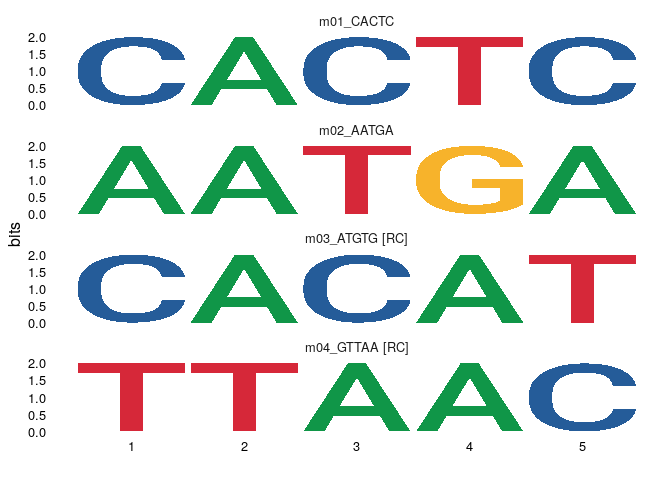
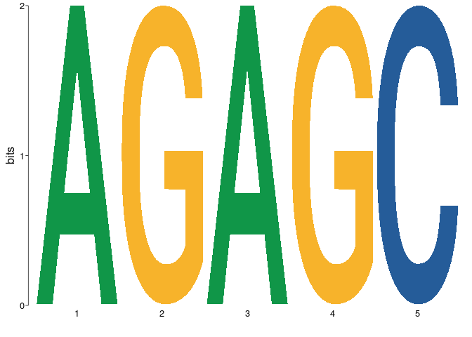

An R interface to the MEME Suite family of tools.
Installation
You can install the development version of dremeR from GitHub with:
# install.packages("remotes") remotes::install_github("snystrom/dotargs") remotes::install_github("snystrom/dremeR")
Example
library(dremeR) # Verify that dremeR detects your meme install # should return all green checks if so. check_meme_install() #> checking main install #> ✔ /nas/longleaf/home/snystrom/meme/bin #> checking util installs #> ✔ /nas/longleaf/home/snystrom/meme/bin/dreme #> ✔ /nas/longleaf/home/snystrom/meme/bin/ame #> ✔ /nas/longleaf/home/snystrom/meme/bin/fimo #> ✔ /nas/longleaf/home/snystrom/meme/bin/tomtom
fa <- dremeR:::duplicate_file("inst/extdata/fasta_ex/fa1.fa") dreme_out <- runDreme(fa, "shuffle", e = 39) #> Registered S3 method overwritten by 'treeio': #> method from #> root.phylo ape
dreme results are a data.frame. The motif column contains a universalmotif object with the PCM information for each de-novo discovered motif. This is so that any filtering of the results object also simply filter the available motifs.
dreme_out #> rank id alt seq length nsites positive_hits negative_hits #> 1 1 m01_AAA DREME-1 AAA 3 5 1 1 #> 2 2 m02_AATAATAA DREME-2 AATAATAA 8 10 1 0 #> 3 3 m03_AAT DREME-3 AAT 3 10 1 1 #> pvalue evalue unerased_evalue positive_total negative_total pos_frac neg_frac #> 1 1.0 39 39 1 1 1 1 #> 2 0.5 9 18 1 1 1 0 #> 3 1.0 12 12 1 1 1 1 #> motif #> 1 <S4 class 'universalmotif' [package "universalmotif"] with 20 slots> #> 2 <S4 class 'universalmotif' [package "universalmotif"] with 20 slots> #> 3 <S4 class 'universalmotif' [package "universalmotif"] with 20 slots>
library(universalmotif) view_motifs(dreme_out$motif)
 The primary advantage of using the data.frame output allows simple integration with base subsetting, piping, and the tidyverse.
library(dplyr) #> #> Attaching package: 'dplyr' #> The following objects are masked from 'package:stats': #> #> filter, lag #> The following objects are masked from 'package:base': #> #> intersect, setdiff, setequal, union dreme_out %>% filter(length == 3) %>% {universalmotif::view_motifs(.$motif)}

universalmotif manipulations can easily be executed on data.frame columns. For example:
dreme_out$motif %>% merge_motifs() %>% view_motifs()
TomTom
TomTom can be used to match de-novo motifs from dreme to a database of known motifs. If run on the output of runDreme it will append information for the best match in columns prefixed best_. Secondary matches found by tomtom will be stored in the list column tomtom.
full_res <- runTomTom(dreme_out, database = "inst/extdata/db/fly_factor_survey_id.meme")
full_res #> rank id alt seq length nsites positive_hits negative_hits #> 1 1 m01_AAA DREME-1 AAA 3 5 1 1 #> 2 2 m02_AATAATAA DREME-2 AATAATAA 8 10 1 0 #> 3 3 m03_AAT DREME-3 AAT 3 10 1 1 #> pvalue evalue unerased_evalue positive_total negative_total pos_frac neg_frac #> 1 1.0 39 39 1 1 1 1 #> 2 0.5 9 18 1 1 1 0 #> 3 1.0 12 12 1 1 1 1 #> motif #> 1 <S4 class 'universalmotif' [package "universalmotif"] with 20 slots> #> 2 <S4 class 'universalmotif' [package "universalmotif"] with 20 slots> #> 3 <S4 class 'universalmotif' [package "universalmotif"] with 20 slots> #> best_match_id best_match_alt best_match_pvalue best_match_evalue #> 1 <NA> <NA> NA NA #> 2 bab1_FlyReg FBgn0004870 0.000287 0.174 #> 3 <NA> <NA> NA NA #> best_match_qvalue best_db_name #> 1 NA <NA> #> 2 0.326 fly_factor_survey_id #> 3 NA <NA> #> best_match_motif #> 1 NULL #> 2 <S4 class 'universalmotif' [package "universalmotif"] with 20 slots> #> 3 NULL #> tomtom #> 1 NULL #> 2 bab1_FlyReg, ap_FlyReg, Pph13_Cell, jigr1_SANGER_5, So_Cell, Antp_FlyReg, br-Z4_FlyReg, hb_FlyReg, zen_FlyReg, Hgtx_SOLEXA, eve_FlyReg, FBgn0004870, FBgn0000099_2, FBgn0023489, FBgn0039350, FBgn0003460, FBgn0000095_2, FBgn0000210_4, FBgn0001180_2, FBgn0004053_2, FBgn0040318_2, FBgn0000606_2, 0.000287, 0.00413, 0.00419, 0.00431, 0.00657, 0.00825, 0.0086, 0.0102, 0.012, 0.0145, 0.0164, 0.174, 2.51, 2.55, 2.62, 4, 5.02, 5.23, 6.18, 7.31, 8.84, 9.99, 0.326, 0.592, 0.592, 0.592, 0.592, 0.592, 0.592, 0.592, 0.592, 0.592, 0.592, fly_factor_survey_id, fly_factor_survey_id, fly_factor_survey_id, fly_factor_survey_id, fly_factor_survey_id, fly_factor_survey_id, fly_factor_survey_id, fly_factor_survey_id, fly_factor_survey_id, fly_factor_survey_id, fly_factor_survey_id, <S4 class 'universalmotif' [package "universalmotif"] with 20 slots>, <S4 class 'universalmotif' [package "universalmotif"] with 20 slots>, <S4 class 'universalmotif' [package "universalmotif"] with 20 slots>, <S4 class 'universalmotif' [package "universalmotif"] with 20 slots>, <S4 class 'universalmotif' [package "universalmotif"] with 20 slots>, <S4 class 'universalmotif' [package "universalmotif"] with 20 slots>, <S4 class 'universalmotif' [package "universalmotif"] with 20 slots>, <S4 class 'universalmotif' [package "universalmotif"] with 20 slots>, <S4 class 'universalmotif' [package "universalmotif"] with 20 slots>, <S4 class 'universalmotif' [package "universalmotif"] with 20 slots>, <S4 class 'universalmotif' [package "universalmotif"] with 20 slots> #> 3 NULL
full_res$tomtom #> [[1]] #> NULL #> #> [[2]] #> match_id match_alt match_pvalue match_evalue match_qvalue #> 1 bab1_FlyReg FBgn0004870 0.000287 0.174 0.326 #> 2 ap_FlyReg FBgn0000099_2 0.004130 2.510 0.592 #> 3 Pph13_Cell FBgn0023489 0.004190 2.550 0.592 #> 4 jigr1_SANGER_5 FBgn0039350 0.004310 2.620 0.592 #> 5 So_Cell FBgn0003460 0.006570 4.000 0.592 #> 6 Antp_FlyReg FBgn0000095_2 0.008250 5.020 0.592 #> 7 br-Z4_FlyReg FBgn0000210_4 0.008600 5.230 0.592 #> 8 hb_FlyReg FBgn0001180_2 0.010200 6.180 0.592 #> 9 zen_FlyReg FBgn0004053_2 0.012000 7.310 0.592 #> 10 Hgtx_SOLEXA FBgn0040318_2 0.014500 8.840 0.592 #> 11 eve_FlyReg FBgn0000606_2 0.016400 9.990 0.592 #> db_name #> 1 fly_factor_survey_id #> 2 fly_factor_survey_id #> 3 fly_factor_survey_id #> 4 fly_factor_survey_id #> 5 fly_factor_survey_id #> 6 fly_factor_survey_id #> 7 fly_factor_survey_id #> 8 fly_factor_survey_id #> 9 fly_factor_survey_id #> 10 fly_factor_survey_id #> 11 fly_factor_survey_id #> match_motif #> 1 <S4 class 'universalmotif' [package "universalmotif"] with 20 slots> #> 2 <S4 class 'universalmotif' [package "universalmotif"] with 20 slots> #> 3 <S4 class 'universalmotif' [package "universalmotif"] with 20 slots> #> 4 <S4 class 'universalmotif' [package "universalmotif"] with 20 slots> #> 5 <S4 class 'universalmotif' [package "universalmotif"] with 20 slots> #> 6 <S4 class 'universalmotif' [package "universalmotif"] with 20 slots> #> 7 <S4 class 'universalmotif' [package "universalmotif"] with 20 slots> #> 8 <S4 class 'universalmotif' [package "universalmotif"] with 20 slots> #> 9 <S4 class 'universalmotif' [package "universalmotif"] with 20 slots> #> 10 <S4 class 'universalmotif' [package "universalmotif"] with 20 slots> #> 11 <S4 class 'universalmotif' [package "universalmotif"] with 20 slots> #> #> [[3]] #> NULL
full_res %>% dplyr::select(id, alt, seq, best_match_id, best_match_pvalue, best_match_evalue, best_match_motif) #> id alt seq best_match_id best_match_pvalue #> 1 m01_AAA DREME-1 AAA <NA> NA #> 2 m02_AATAATAA DREME-2 AATAATAA bab1_FlyReg 0.000287 #> 3 m03_AAT DREME-3 AAT <NA> NA #> best_match_evalue #> 1 NA #> 2 0.174 #> 3 NA #> best_match_motif #> 1 NULL #> 2 <S4 class 'universalmotif' [package "universalmotif"] with 20 slots> #> 3 NULL
full_res$best_match_motif #> [[1]] #> NULL #> #> [[2]] #> #> Motif name: bab1_FlyReg #> Alternate name: FBgn0004870 #> Alphabet: DNA #> Type: PCM #> Strands: +- #> Total IC: 14.61 #> Consensus: TATWAWTRTT #> Target sites: 6 #> #> T A T W A W T R T T #> A 1 6 0 2 4 2 0 3 0 0 #> C 0 0 0 0 0 0 0 0 0 0 #> G 0 0 0 0 1 0 0 3 0 1 #> T 5 0 6 4 1 4 6 0 6 5 #> #> [[3]] #> NULL view_tomtom_hits(full_res, 1) #> [[1]]

Denovo Motif Pipeline w/ dremer
suppressPackageStartupMessages(library(GenomicRanges)) peaks <- "inst/extdata/peaks/peaks.tsv" %>% readr::read_tsv() %>% GRanges
dm.genome <- BSgenome.Dmelanogaster.UCSC.dm6::BSgenome.Dmelanogaster.UCSC.dm6 options(meme_db = "inst/extdata/db/fly_factor_survey_id.meme") motif_analysis <- peaks %>% resize(200, "center") %>% get_sequence(dm.genome) %>% runDreme("shuffle", e = 50) %>% runTomTom()
Compare denovo motif with best match
use cowplot to arrange plots in a grid.
view_tomtom_hits(motif_analysis, 1) %>% cowplot::plot_grid(plotlist = ., labels = "AUTO")
Evaluate top 3 hits from TOMTOM
view_tomtom_hits(motif_analysis, 3) #> [[1]]

library(ggplot2) frac_plot <- motif_analysis %>% ggplot(aes(reorder(id, pos_frac), pos_frac/neg_frac)) + geom_col() + coord_flip() + labs(x = NULL, y = "Enrichment Ratio") + theme_bw() + theme(axis.text.y = element_blank())
cowplot::plot_grid( universalmotif::view_motifs(motif_analysis$motif), frac_plot )
Motif scanning & enrichment testing with AME
ame_analysis <- peaks %>% resize(200, "center") %>% get_sequence(dm.genome) %>% runAme(evalue_report_threshold = 50)
ame_analysis %>% ame_plot_heatmap()
Example for converting gene ids
Try using annotationDbi::mapIds instead. Also, note below E93 Fbgn is out of date & does not map.
ame_analysis$motif_alt_id %>% gsub("_.+", "", .) %>% clusterProfiler::bitr(fromType = "FLYBASE", toType = "SYMBOL", OrgDb = org.Dm.eg.db::org.Dm.eg.db) #> #> Registered S3 method overwritten by 'enrichplot': #> method from #> fortify.enrichResult DOSE #> #> 'select()' returned 1:1 mapping between keys and columns #> Warning in clusterProfiler::bitr(., fromType = "FLYBASE", toType = "SYMBOL", : #> 25% of input gene IDs are fail to map... #> FLYBASE SYMBOL #> 2 FBgn0000286 Cf2 #> 3 FBgn0263108 BtbVII #> 4 FBgn0013263 Trl
reducing best matches from ame
ame_analysis %>% dplyr::group_by(motif_id) %>% dplyr::filter(adj.pvalue == min(adj.pvalue)) %>% dplyr::ungroup() #> # A tibble: 4 x 17 #> rank motif_db motif_id motif_alt_id consensus pvalue adj.pvalue evalue tests #> <int> <chr> <chr> <chr> <chr> <dbl> <dbl> <dbl> <int> #> 1 1 inst/ex… Eip93F_… FBgn0013948 ACWSCCRA… 5.14e-4 0.0339 20.6 67 #> 2 2 inst/ex… Cf2-PB_… FBgn0000286… CSSHNKDT… 1.57e-3 0.04 24.3 26 #> 3 3 inst/ex… BtbVII_… FBgn0263108 MBTATGTA… 4.30e-4 0.0697 42.4 168 #> 4 4 inst/ex… Trl_Fly… FBgn0013263 YYKCTCTC… 2.37e-4 0.0784 47.7 344 #> # … with 8 more variables: fasta_max <dbl>, pos <int>, neg <int>, #> # pwm_min <dbl>, tp <int>, tp_percent <dbl>, fp <int>, fp_percent <dbl>
Ame in partitioning mode
ame_partition <- peaks %>% data.frame %>% # NOTE: never actually do this, just a quick way to generate example data dplyr::mutate(score = seq_along(start)) %>% GRanges %>% resize(200, "center") %>% get_sequence(dm.genome, score = "score") %>% runAme(control = NA, evalue_report_threshold = 50)
ame_partition %>% dplyr::mutate(tfid = gsub("(.+)_{1}.+", "\\1", motif_id)) %>% ame_plot_heatmap(id = tfid)
Dotargs backend & error checking
ame_analysis <- peaks %>% resize(200, "center") %>% get_sequence(dm.genome) %>% runAme(evalue_reportt_threshold = 30)